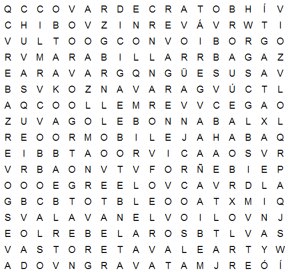

¿Que és?
La sopa de letras es un pasatiempo inventado por Pedro Ocón de Oro,1 que consiste en una cuadrícula u otra forma geométrica rellena con diferentes letras para formar palabras .
Como jugar
Para jugar escribe tu nombre y pulsa play. Una vez dentro pulsa los botones A con letras para formar una palabra.
Si te equivocas puedes pulsat el boton de Reset para volver a formar la palabra.
Una vez que termines la sopa de letra te saldra al final de la partida el tiempo que has empleado para resolverla.